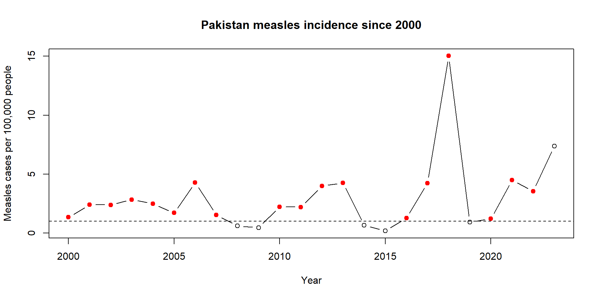

We are going to answer one concrete question with the measles data:
In Pakistan since 2000, which years should we flag for follow-up because first-dose measles vaccine coverage was low and measles incidence was elevated?
This is a miniature version of the Exercise 1 manuscript arc:
We can describe the rule in plain English:
If MCV1 coverage is below 90% and measles incidence is at least 1 case per 100,000 people, call it a priority year.
Now the problem is not “Can I memorize R?”
The problem is:
How do I turn that sentence into computer code?
Classes 'spec_tbl_df', 'tbl_df', 'tbl' and 'data.frame': 9416 obs. of 5 variables:
$ country : chr "Afghanistan" "Afghanistan" "Afghanistan" "Afghanistan" ...
$ year : num 2023 2022 2021 2020 2019 ...
$ measles_cases: num 2792 5166 2900 640 353 ...
$ population : num 42239854 41128771 40099462 38972230 37769499 ...
$ MCV1_coverage: num NA 68 63 66 64 71 67 64 62 60 ...For this question, we need:
country, because we are starting with Pakistanyear, because we only want 2000 and latermeasles_cases, because we need incidencepopulation, because raw case counts are hard to compareMCV1_coverage, because that is our coverage variablepakistan_check_rows <- pakistan[, c(
"country",
"year",
"measles_cases",
"MCV1_coverage"
)]
head(pakistan_check_rows) country year measles_cases MCV1_coverage
6448 Pakistan 2000 2064 57
6447 Pakistan 2001 3849 59
6446 Pakistan 2002 3903 60
6445 Pakistan 2003 4740 62
6444 Pakistan 2004 4248 63
6443 Pakistan 2005 2981 61Raw case counts are useful, but they do not account for population size.
So we make a new variable:
measles cases per 100,000 people
pakistan_check <- pakistan[, c(
"year",
"measles_cases",
"population",
"cases_per_100k"
)]
pakistan_check$cases_per_100k <- round(pakistan_check$cases_per_100k, 2)
tail(pakistan_check, 8) year measles_cases population cases_per_100k
NA.16 NA NA NA NA
NA.17 NA NA NA NA
NA.18 NA NA NA NA
NA.19 NA NA NA NA
NA.20 NA NA NA NA
NA.21 NA NA NA NA
NA.22 NA NA NA NA
NA.23 NA NA NA NAThe English rule has two parts:
In R, each part becomes a logical vector.
logic_check <- data.frame(
year = pakistan$year,
MCV1_coverage = pakistan$MCV1_coverage,
cases_per_100k = round(pakistan$cases_per_100k, 2),
low_coverage = low_coverage,
elevated_incidence = elevated_incidence
)
tail(logic_check, 8) year MCV1_coverage cases_per_100k low_coverage elevated_incidence
41 NA NA NA NA NA
42 NA NA NA NA NA
43 NA NA NA NA NA
44 NA NA NA NA NA
45 NA NA NA NA NA
46 NA NA NA NA NA
47 NA NA NA NA NA
48 NA NA NA NA NAIf coverage is missing, R cannot decide whether coverage is below 90%.
That is not a failure. It is R refusing to guess.
For a manuscript-style analysis, we need to decide what we want to do with missing information.
Here is the rule in full:
"missing information"."priority year"."not priority".ifelse() do?ifelse() has three pieces:
Our nested version says:
year measles_cases MCV1_coverage cases_per_100k priority_year
NA.16 NA NA NA NA missing information
NA.17 NA NA NA NA missing information
NA.18 NA NA NA NA missing information
NA.19 NA NA NA NA missing information
NA.20 NA NA NA NA missing information
NA.21 NA NA NA NA missing information
NA.22 NA NA NA NA missing information
NA.23 NA NA NA NA missing informationpriority_years <- pakistan$year[pakistan$priority_year == "priority year"]
data.frame(
country = "Pakistan",
start_year = min(pakistan$year),
end_year = max(pakistan$year),
total_years = nrow(pakistan),
priority_years = length(priority_years),
most_recent_priority_year = max(priority_years)
) country start_year end_year total_years priority_years
1 Pakistan NA NA 48 18
most_recent_priority_year
1 2022plot(
pakistan$year,
pakistan$cases_per_100k,
type = "b",
xlab = "Year",
ylab = "Measles cases per 100,000 people",
main = "Pakistan measles incidence since 2000"
)
abline(h = 1, lty = 2)
points(
pakistan$year[pakistan$priority_year == "priority year"],
pakistan$cases_per_100k[pakistan$priority_year == "priority year"],
pch = 19,
col = "red"
)
Methods sentence
We defined a priority year as a country-year with MCV1 coverage below 90% and at least 1 reported measles case per 100,000 people; country-years with missing coverage or incidence were labeled as missing information.
Results sentence
Pakistan had several priority years since 2000 under this rule, with the most recent priority year identified in the summary table.
Student prompt
Change the question:
In Afghanistan since 2010, which years should be flagged if MCV2 coverage was below 80% or measles incidence was at least 5 cases per 100,000 people?
Write the code before looking at the solution.
You need to change four pieces:
The R operator for “or” is |.
afghanistan$priority_year <- ifelse(
(!is.na(afghanistan$MCV2_coverage) & afghanistan$MCV2_coverage < 80) |
(!is.na(afghanistan$cases_per_100k) & afghanistan$cases_per_100k >= 5),
"priority year",
ifelse(
is.na(afghanistan$MCV2_coverage) | is.na(afghanistan$cases_per_100k),
"missing information",
"not priority"
)
)afghanistan_result <- afghanistan[, c(
"year",
"measles_cases",
"MCV2_coverage",
"cases_per_100k",
"priority_year"
)]
afghanistan_result$cases_per_100k <- round(afghanistan_result$cases_per_100k, 2)
afghanistan_labels <- afghanistan_result[, c("year", "priority_year")]
head(afghanistan_labels, 7) year priority_year
14 2010 priority year
13 2011 priority year
12 2012 priority year
11 2013 priority year
10 2014 priority year
9 2015 priority year
8 2016 priority year&, |, is.na(), and ifelse()Next time, we will repeat this same rule across many countries.